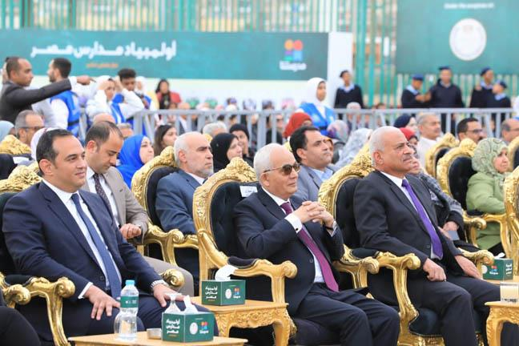

وزير التربية والتعليم ومحافظ السويس يشهدان فعاليات نهائى مسابقة "أولمبياد مدارس مصر" تحت شعار "مع بعض نكبر" بمحافظة السويس
شهد الدكتور رضا حجازى وزير التربية والتعليم والتعليم الفنى، واللواء عبد المجيد صقر، اليوم، فعاليات نهائى مسابقة "أولمبياد مدارس مصر" تحت شعار "مع بعض نكبر" باستاد منتخب السويس بمحافظة السويس، بالتعاون مع قنوات مدرستنا، حيث تأتي هذه المسابقة ضمن مبادرات وزارة التربية والتعليم، لإحياء النشاط الطلابي، واكتشاف المواهب في المدارس.
جاء ذلك بحضور الدكتور أحمد ضاهر نائب الوزير للتطوير التكنولوجى، والدكتورة شرين حمدى مستشار الوزير للتطوير الإدارى والمشرف على الإدارة المركزية لشئون مكتب الوزير، والدكتورة ايمان حسن رئيس الإدارة المركزية للأنشطة الطلابية.
وقد أكد الدكتور رضا حجازى، في مداخلة له خلال الفعاليات، أن مسابقات "أولمبياد مدارس مصر"، حققت نقلة نوعية فى التعليم بمصر، مشيرا إلى أن هذه المسابقات تظهر ميزة كل طالب، وتشكيل شخصيته وتنمية مهارته بالإضافة إلى تنمية وتعزيز القيم الاجتماعية لديه.
وأضاف أن هدف ورسالة الوزارة للمنظومة التعليمية قد تحققت بهؤلاء الطلاب، مشيراً إلى أننا اليوم نجني ثمارها بعودة المدرسة لدورها الأساسي وتطبيق الطلاب للأنشطة المختلفة سواء الأنشطة الرياضية والفنية والثقافية ، فضلا عن تنمية المهارات وابتكار الطلاب وهو ما يدفع تجاه تحقيق رؤية مصر للتنمية المستدامة 2030.
وقد شهد الوزير خلال الفعاليات مسابقة المشروعات التنموية، حيث تم عرض فيديو ملخص عن المشروعات المختلفة التي شاركت في المسابقة.
ودارت المباراة النهائية بين فريق مدرسة السويس الثانوية الجديدة بنات ومشروعها هو " طبيعتك تميزك" للتوعية ضد التنمر في مدارس السويس، في مواجهة فريق مدرسة مصطفى مشرفة الإعدادية بنين ومشروعها بعنوان "ملاعبنا".
وقد ضمت لجنة تحكيم المباراة النهائية المهندسة أمل مبدى رئيس قطاع تنمية الموارد بمؤسسة مصر الخير ورئيس الاتحاد المصري والعربي للإعاقات الذهنية ومؤسس فكرة ( قادرون باختلاف)، والدكتور محمد العقبي مستشار وزيرة التخطيط والتنمية الاقتصادية وأستاذ علم الاجتماع بجامعة حلوان أمين عام مؤسسة صناع الخير وأمين عام مؤسسة "فاهم" للدعم النفسي، والأستاذ محسن سرحان الرئيس التنفيذي لبنك الطعام.
وشرح كل طالب من الطلاب مشروعه، وما يقدمه مشروعهم لاستفادة طلاب المدارس منه، حيث أكدت طالبات مدرسة الثانوية بنات ومشروعهن ضد التنمر، بأنهن قررن أن يتخذن خطوة إيجابية ويبدأن من المدارس التى تخرج اجيال جديدة، وذلك لضمان انشاء جيل سوى وقادر على مواجهة التنمر والسخرية، وتعزيز قيم "تجمل بالاخلاق" مثل التعاون، والصداقة وقيم أخرى.